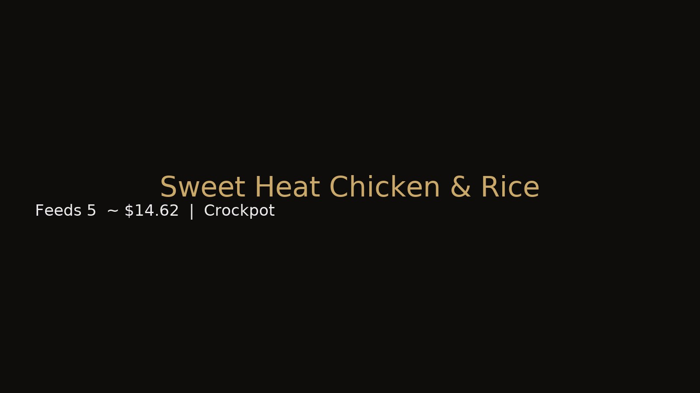

← Back to Recipes
Sweet Heat Chicken & Rice
Crockpot
Heat: Medium • Level 3/5
Sweet • Spicy • Buttery
Serves 5 • Cost $14.62 • Prep 10 min • Cook 3 hrs (Low)

Ingredients
- 2 lbs chicken thighs
- 1 cup rice
- 2 cups chicken broth
- 2 tbsp honey
- 1 tsp hot sauce
- 1 tbsp butter
Directions — 3 Stages
1) Prep
- Add all ingredients to crockpot; stir once.
2) Cook
- Cook on Low 3 hrs. Avoid lifting the lid first 2 hrs.
3) Finished
- Rice absorbs sauce; chicken tender and glazed. Serve with peas or cornbread.
Budget Tip
Use store-brand rice and broth. Next day: turn leftovers into fried rice with frozen peas.
© 2025 Jeffrey Levels • Budget Soul Kitchen